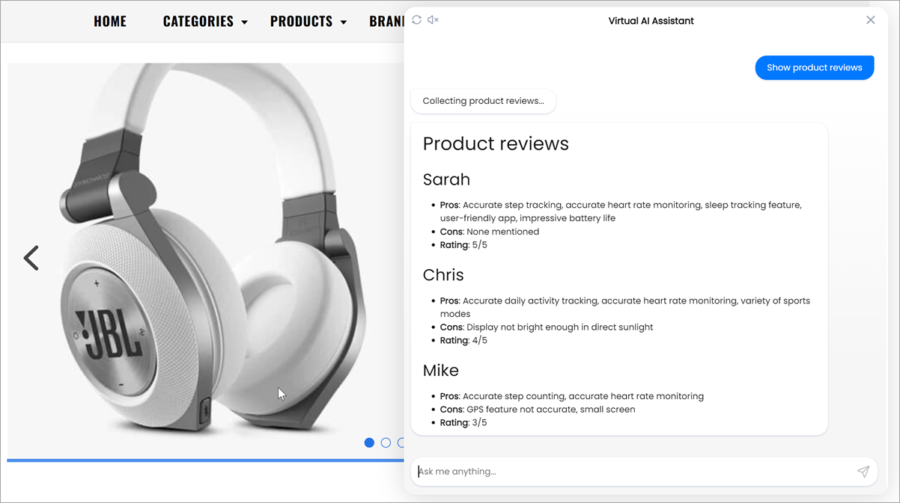
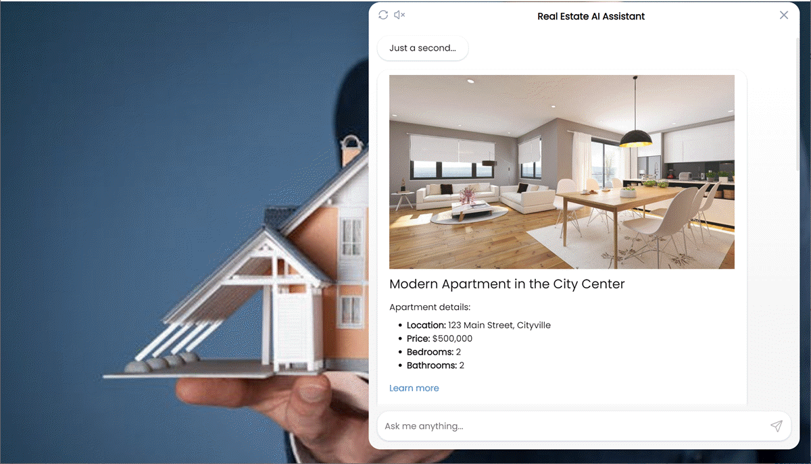

Intent transforms¶
You can transform AI assistant’s responses from the intent() function to meet your requirements.
Assume you have the infrastructure description presented as text. You want your AI assistant to be able to answer questions about the infrastructure components and show their details as structured and formatted text in the Alan AI Chat.
For this, you can do the following:
Add a transform named
formatwith the following rules:Example 1
Instruction:
The input contains the infrastructure description in plain text, the query contains sample questions, the result contains formatted textInput:
Web Server VM (Web-01): hosting the company website, Ubuntu Server 20.04, 4 vCPUs, 8GB RAM, IP address 192.168.1.101, input format: textQuery:
What is the Web-01 configuration?Result: example of output data, output format: markdown:
Result field¶## VM name: Web Server VM (Web-01) - **Purpose**: Hosting the company website. - **Configuration**: - **OS**: Ubuntu Server 20.04 - **Resources**: 4 vCPUs, 8GB RAM - **IP Address**: 192.168.1.101
Example 2
Instruction:
The input contains the infrastructure description in plain text, the query contains sample questions, the result contains formatted textInput:
Web Server VM (Web-01): hosting the company website, Ubuntu Server 20.04, 4 vCPUs, 8GB RAM, IP address 192.168.1.101, input format: textQuery:
What OS does the Web-01 VM run?Result: example of output data:
The **Web-01** runs **Ubuntu Server 20.04**, output format: markdown
Add the following code to your dialog script:
Dialog script¶let infrastructure = ` Data Center: Main Data Center Virtual Machines: 1. Web Server VM (Web-01): hosting the company website, Ubuntu Server 20.04, 4 vCPUs, 8GB RAM, IP address 192.168.1.101 2. App Server VM (App-01): running business applications, CentOS 7, 2 vCPUs, 4GB RAM, IP address: 192.168.1.102 3. Database Server VM (DB-01): hosting relational databases, Windows Server 2019, 8 vCPUs, 16GB RAM, IP address: 192.168.1.103 `; intent("Show the $(VM* .+ ) configuration", async p => { p.play("Just a second..."); // Transform review data let i = await transforms.format({ input: infrastructure, query: 'What is the configuration of ' + p.VM.value }); p.play(i); }); intent( "(What|How many) $(RESOURCE* .+) does $(VM* .+) (run|have)?", "(What|How much|How many) $(RESOURCE* .+) (is|are) (available|) on $(VM* .+)?", async p => { p.play("Just a second..."); // Transform review data let i = await transforms.format({ input: infrastructure, query: p.RESOURCE.value + ' available on ' + p.VM.value }); p.play(i); });
Here, the infrastructure description in plain text is saved to
infrastructure. When the user asks to show the configuration of a specific VM or asks about resources available on a specific VM, a corresponding intent is invoked and the text is transformed to the necessary format:
Assume you have a JSON-formatted list of product reviews. You want to pre-process this data to:
Present data in an aesthetic format using markdown
Extract pros and cons from the review text and present them as bulleted text
For this, you can do the following:
Add a transform named
summarizewith the following rules:Instruction:
The input contains the initial JSON, the query contains fields description, the result shows what fields should be available and how the text should be formattedInput:
{"Name": "Emily", "Rating": "4/5", "Review": "A solid fitness tracker with accurate measurements. I appreciate the waterproof design, which allows me to wear it while swimming. The battery life is decent, but I wish it had more customizable watch faces."}, input format: JSONQuery:
Name is the name of the user who left feedback, rating is the rating set, review contains the product pro and consResult: example of output data, output format: markdown
Result field¶# Product reviews ## Name - **Pros**: Accurate measurements, waterproof design, decent battery life - **Cons**: Few customizable watch faces - **Rating**: rating
Add the following code to your dialog script:
Dialog script¶let productReviews = { "reviews": [ { "name": "Sarah", "rating": "5/5", "review": "I've been using this fitness tracker for a few weeks now, and it's been a game-changer for my fitness journey. It accurately tracks my steps and heart rate. The sleep tracking feature is a bonus, helping me improve my sleep patterns. The app is user-friendly, and the battery life is impressive. Highly recommend!" }, { "name": "Chris", "rating": "4/5", "review": "The fitness tracker is great for tracking my daily activities. The heart rate monitor is quite accurate, and I like the variety of sports modes. My only wish is for a brighter display in direct sunlight. Overall, a solid choice." }, { "name": "Linda", "rating": "5/5", "review": "I love this fitness tracker. It's lightweight, comfortable to wear, and the battery lasts for days. The sleep tracking is a lifesaver, helping me identify areas for improvement. The app is intuitive, and it syncs seamlessly with my phone. Couldn't be happier!" } ] } intent(`Show product reviews`, async (p)=> { p.play(`Collecting product reviews...`); // Transform review data let r = await transforms.summarize({ input: productReviews, query: 'JSON containing a list of product reviews' }); p.play(r); });
Here, reviews in JSON format are saved to
productReviews. When the user asks to show reviews, the review data is summarized and formatted to be presented using the defined template:
Assume you have a JSON-formatted list of apartments. When the user asks: Show available apartments, you want to display these appartments in an aesthetic format.
For this, you can do the following:
Add a transform named
renderwith the following rules:Instruction:
The input contains the apartment description in JSON, the query contains sample questions, the result contains formatted textInput:
{"name": "Luxury Penthouse with Panoramic Views", "location": "789 Skyline Drive, Metropolis", "price": "$1,200,000", "bedrooms": 3, "bathrooms": 3, "image": "https://vmts.ch/wp-content/uploads/2017/06/Hallenbad_2-1.jpg", "url": "https://vmts.ch/en/portfolio/project-hallenbad/"}, input format: JSONQuery:
Show available apartments,What apartments do you offer?Result: example of output data, output format: HTML
Result field¶<div> <img src="https://vmts.ch/wp-content/uploads/2017/06/Hallenbad_2-1.jpg" alt="Luxury Penthouse with Panoramic Views"> <h4>Luxury Penthouse with Panoramic Views</h4> <p>Apartment details</p>: <ul> <li><b>Location:</b>789 Skyline Drive, Metropolis</li> <li><b>Price:</b> $1,200,000</li> <li><b>Bedrooms:</b> 3</li> <li><b>Bathrooms:</b> 3</li> </ul> <p><a href="https://vmts.ch/en/portfolio/project-hallenbad/">Learn more</a></p> </div> <br/>
Add the following code to your dialog script:
Dialog script¶let data = { "properties": [ { "name": "Modern Apartment in the City Center", "location": "123 Main Street, Cityville", "price": "$500,000", "bedrooms": 2, "bathrooms": 2, "image": "https://vmts.ch/wp-content/uploads/2017/06/v1.jpg", "url": "https://vmts.ch/en/portfolio/project-gasterzimmer/" }, { "name": "Suburban Family Home", "location": "456 Oak Avenue, Suburbia", "price": "$750,000", "bedrooms": 4, "bathrooms": 3, "image": "https://vmts.ch/wp-content/uploads/2017/05/7-2.jpg", "url": "https://vmts.ch/en/portfolio/project-niederteufen/" }, { "name": "Luxury Penthouse with Panoramic Views", "location": "789 Skyline Drive, Metropolis", "price": "$1,200,000", "bedrooms": 3, "bathrooms": 3, "image": "https://vmts.ch/wp-content/uploads/2017/06/Hallenbad_2-1.jpg", "url": "https://vmts.ch/en/portfolio/project-hallenbad/" } ] } intent("Show available apartments", async p => { p.play("Just a second..."); // Transform apartments data let a = await transforms.render({ input: data, query: 'Show available apartments' }); p.play(a); });
Here, the apartments data in JSON format are saved to
data. When the user asks to show available apartments, the apartments data is rendered and presented using the defined template: